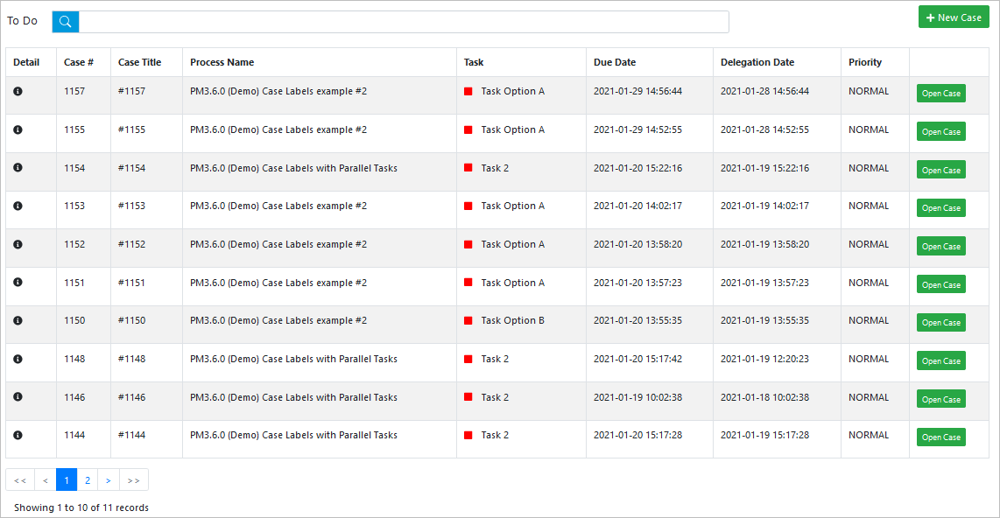
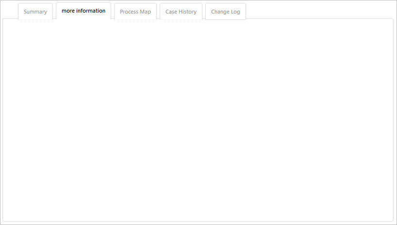
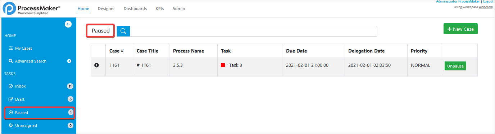
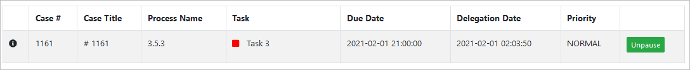

Inbox
The Inbox section contains a list of cases sent to the user when the current task is assigned to this user.

When a To Do case is sent to the user’s inbox , it means that a current task has not been completed yet. Once the data in a task is changed by submitting a Dynaform or when another type of step is completed, then the case status will change to Draft.
Note: Only cases on their first task may have the "Draft" status.
When cases in the Due Date column are listed in red have already passed their due date. The expected time for each task to be completed can be set in the Task Timing Control settings.
The inbox columns are the following:
- Detail: This field opens a window containing the case information.
- Case #: Cases are sorted by their case number.
- Case Title: This field contains the last updated custom case title.
- Process Name: This field displays the name of the BPMN process.
-
Task: This field displays the case status, the current task name, and the case user profile image (additional information displays when hovering over these). The status colors available are the following
- Red: This means the task is overdue. This overdue task has priority over paused or unassigned tasks.
- Blue: This means the task is paused. This paused task has priority over pending/on time tasks.
- Grey: This means the task is unassigned. This unassigned task has priority over pending/on time tasks.
- Green: This means the task is in progress. This pending /on time task has the lowest priority.
- Orange: This means the task is In draft. If the case’s status is in draft has no priority because this will be displayed only in the Draft folder/tray.
- Due Date: This field displays the date when the task is due in YYYY-MM-DD HH:MM:SS format.
- Delegation Date: This field displays the date when the task was delegated to the user in YYYY-MM-DD HH:MM:SS format.
- Priority: This field displays the priority of the task.
Case information
To view the information about a specific case, click on the information icon  in the Detail column of the Inbox screen.
in the Detail column of the Inbox screen.
The Case Information screen displays the following:

The Task Information section displays the following:

-
Case details: It is a grid with the list of the case threads. It dsplays the following columns:
- Task: It displays the status color code and the name of the task..
- Case Title: It displays the case title per thread.
- Current User: It displays the user who is responsible for the task. If the case is unassigned, it will not display a user.
- Status: It displays the status of the task.
- Due Date: It displays the date when the task is due.
-
Actions: The actions depend on the privileges awarded to the user. If the user is the task owner, he can access the Open Task or Continue (use Continue only if the case is in Draft), Unpause or Claim Task when the task is unassigned (after the confirmation of the action in the pop-up window, the task form opens, the Open and Continue options will only open the Task Form).
If the user is a supervisor and is not the owner of the task, he only has access to the following actions: Open (to edit the form), Reassign and Cancel.
The Case Summary displays the following information about the case:

- Case #: It displays the number of the case.
- Process: It displays the name of the process.
- Case Status: It displays the status of the case.
- Case Title: It displays the last updated case title.
- Created Date: It displays the date when the case was created.
- Task Delegate Date: It displays the date when the case was delegated.
- Duration: It displays the time from Start Date to Finish Date in the format of hours:minutes:seconds.
- Actions: It displays only if the user is able to Cancel the case, as Cancel Case (if the user has permissions to cancel the task he will have access to the Cancel Task option).
The Summary tab displays the Case Properties and the Current Tas(s) Properties:

The More Information tab displays additional information if available.
The Process Map tab displays a map of the current process.

The Case History tab displays a list of tasks within the process.

The Change Log tab displays the variables within each task with their previous values and current values.

Draft
This list displays all the cases that have the DRAFT status.

The first section of this inbox displays a Draft title, a search box and the + New Case button.

The second section of this inbox displays a table with the Draft cases.

The columns are the following:
- Detail: It is an icon. When clicked, the Case Information screen displays.
- Case #: Cases are ordered by their Case # (case number).
- Case Title: Contains the last updated custom case title.
- Process Name: It is the name of the BPMN process.
-
Task: It shows a box with the status legend color, the name of the current task name, and the case user profile image. Additional information is displayed when overing the status task color and the case user profile image. The colors available for the status task are the following:
- Red: Overdue. If a task is on the due date the color has more priority to be displayed and if the task is still pending to be completed will display the delay time.
- Grey: Unassigned. If the task is unassigned has more priority over pending/on time.
- Green: In progress. If the task is pending/on time has the lowest priority.
- Orange: In draft. If the case is in draft has no priority because will be displayed only in the Draft folder/tray.
- Priority: It displays the priority of the case.
-
The last column displays a Open Case button to open the case.
Paused
This list displays all the cases that are paused.
The first section of this inbox displays a Paused title, a search box and the + New Case button.

The second section of this inbox displays a table with the To Do cases.
The columns are the following:
- Detail: It is an icon. When clicked, the Case Information screen displays.
- Case #: Cases are ordered by their Case # (case number).
- Case Title: Contains the last updated custom case title.
- Process Name: It is the name of the BPMN process.
-
Task: It shows a box with the status legend color, the name of the current task name, and the case user profile image. Additional information is displayed when overing the status task color and the case user profile image. The colors available for the status task are the following:
- Red: Overdue. If a task is on the due date the color has more priority to be displayed and if the task is still pending to be completed will display the delay time.
- Grey: Unassigned. If the task is unassigned has more priority over pending/on time.
- Green: In progress. If the task is pending/on time has the lowest priority.
- Orange: In draft. If the case is in draft has no priority because will be displayed only in the Draft folder/tray.
- Due date: It displays the date when the case dues.
- Delegation date: It displays the delegation date of the case.
- Priority: It displays the priority of the case.
-
The last column displays a Unpause button to unpause the case. After clicking it, a modal displays to confirm the action.
Unassigned
This list displays all the cases that are unassigned.

The first section of this inbox displays a Unassigned title, a search box and the + New Case button.

The second section of this inbox displays a table with the Unassigned cases.

The columns are the following:
- Detail: It is an icon. When clicked, the Case Information screen displays.
- Case #: Cases are ordered by their Case # (case number).
- Case Title: Contains the last updated custom case title.
- Process Name: It is the name of the BPMN process.
-
Task: It shows a box with the status legend color, the name of the current task name, and the case user profile image. Additional information is displayed when overing the status task color and the case user profile image. The colors available for the status task are the following:
- Red: Overdue. If a task is on the due date the color has more priority to be displayed and if the task is still pending to be completed will display the delay time.
- Grey: Unassigned. If the task is unassigned has more priority over pending/on time.
- Green: In progress. If the task is pending/on time has the lowest priority.
- Orange: In draft. If the case is in draft has no priority because will be displayed only in the Draft folder/tray.
- Due date: It displays the date when the case dues.
- Delegation date: It displays the delegation date of the case.
- Priority: It displays the priority of the case.
-
The last column displays a Claim button to claim the case. After clicking it, a modal displays to confirm the action.
Note: After claiming the case, the Task color status still displays grey in the My Cases inbox. After the case is routed, the color will chage according to the new status.